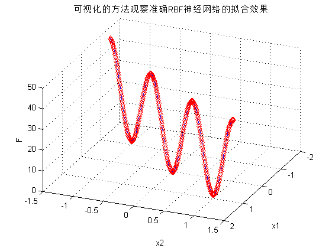

案例7：RBF网络的回归-非线性函数回归的实现
| 该案例作者申明： |
| 1：本人长期驻扎在此板块里，对该案例提问，做到有问必答。本套书籍官方网站为：video.ourmatlab.com |
| 2：点此从当当预定本书：《Matlab神经网络30个案例分析》。 |
3：此案例有配套的教学视频，视频下载方式video.ourmatlab.com/vbuy.html。 |
| 4：此案例为原创案例，转载请注明出处（《Matlab神经网络30个案例分析》）。 |
| 5：若此案例碰巧与您的研究有关联，我们欢迎您提意见，要求等，我们考虑后可以加在案例里。 |
Contents
清空环境变量
clc clear
产生输入 输出数据
设置步长
interval=0.01; % 产生x1 x2 x1=-1.5:interval:1.5; x2=-1.5:interval:1.5; % 按照函数先求得相应的函数值，作为网络的输出。 F =20+x1.^2-10*cos(2*pi*x1)+x2.^2-10*cos(2*pi*x2);
网络建立和训练
网络建立 输入为[x1;x2],输出为F。Spread使用默认。
net=newrbe([x1;x2],F)
Warning: Rank deficient, rank = 19, tol =
1.1634e-012.
net =
Neural Network object:
architecture:
numInputs: 1
numLayers: 2
biasConnect: [1; 1]
inputConnect: [1; 0]
layerConnect: [0 0; 1 0]
outputConnect: [0 1]
numOutputs: 1 (read-only)
numInputDelays: 0 (read-only)
numLayerDelays: 0 (read-only)
subobject structures:
inputs: {1x1 cell} of inputs
layers: {2x1 cell} of layers
outputs: {1x2 cell} containing 1 output
biases: {2x1 cell} containing 2 biases
inputWeights: {2x1 cell} containing 1 input weight
layerWeights: {2x2 cell} containing 1 layer weight
functions:
adaptFcn: (none)
divideFcn: (none)
gradientFcn: (none)
initFcn: (none)
performFcn: (none)
plotFcns: {}
trainFcn: (none)
parameters:
adaptParam: (none)
divideParam: (none)
gradientParam: (none)
initParam: (none)
performParam: (none)
trainParam: (none)
weight and bias values:
IW: {2x1 cell} containing 1 input weight matrix
LW: {2x2 cell} containing 1 layer weight matrix
b: {2x1 cell} containing 2 bias vectors
other:
name: ''
userdata: (user information)
网络的效果验证
% 我们将原数据回带，测试网络效果： ty=sim(net,[x1;x2]); % 我们使用图像来看网络对非线性函数的拟合效果 figure plot3(x1,x2,F,'rd'); hold on; plot3(x1,x2,ty,'b-.'); view(113,36) title('可视化的方法观察准确RBF神经网络的拟合效果') xlabel('x1') ylabel('x2') zlabel('F') grid on web browser http://www.matlabsky.com/thread-11143-1-2.html
相关论坛： 《Matlab神经网络30个案例分析》官方网站：video.ourmatlab.com Matlab技术论坛：www.matlabsky.com Matlab函数百科：www.mfun.la Matlab中文论坛：www.ilovematlab.com |